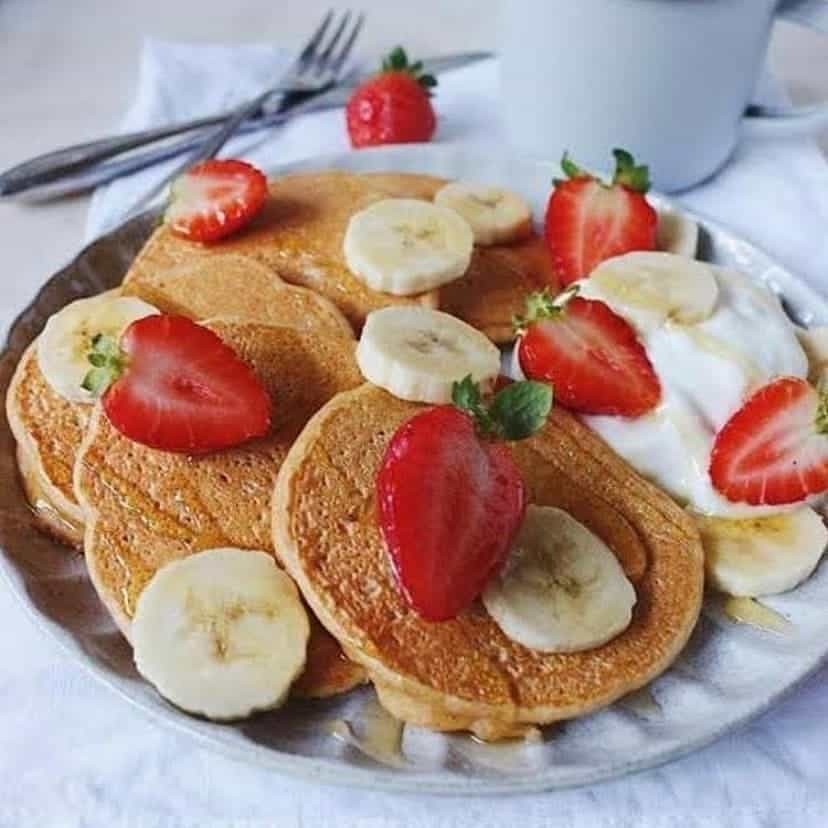

On a healthier note...

I know, this isn't exactly waht you were expecting from the cookie monster
But hear me out, this is a really good pancake recipe. And when ypou taste it, just be admired,
not surprised, because I told it'd be really good. So, this recipe doesn't have any animal derived product, and no added sugar,
just the ones naturally present in the ingredients. This is a
conscience issue free recipe.
Crumbs of happyness
- One mug of vegetal milk
- Half a banana
- Half a mug of oat flakes
- Half a mug whole rice flour
- 2 tbs of ground linseed
- Just a pinch of fine salt
- A pinch of indian saffron
- A pinch of cinnamon powder
- A tsp of powdered yeast coffe
- A tsp of olive oil
- Sugar free jam and maple syrup to serve
- Fruit of choice
Path to self discovery
- Mix everything but the jam, syrup and the fruit of choice, in an blender and leit it rest for 5 minutes;
- Heat a pan with a bit of olive oil and place part of the past in it. let it cook
for 2 to 3 minutes in each side. Repeat until you finish the past;
- Serve the pancakes with jam, some fresh fruit, maple syrup and a bit of cinnamon.
Disclosure: This recipe doesn't belong to me, it was taken from gabrielaoliveira
Back to the list